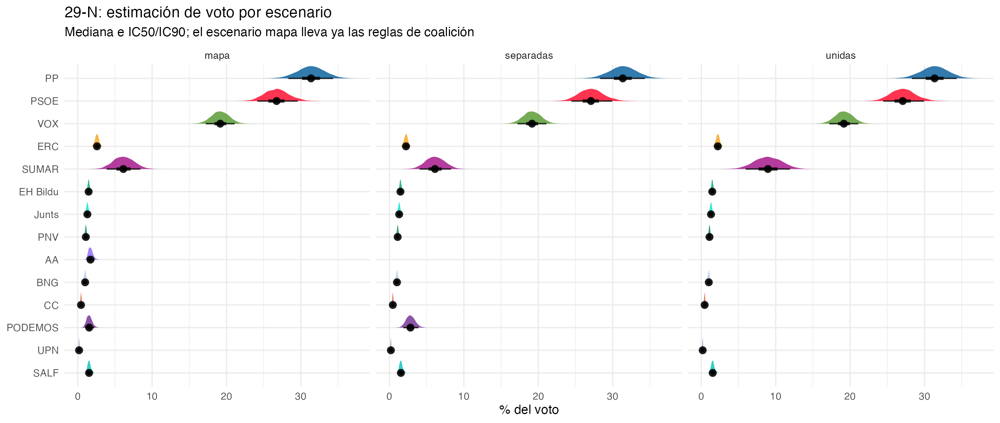
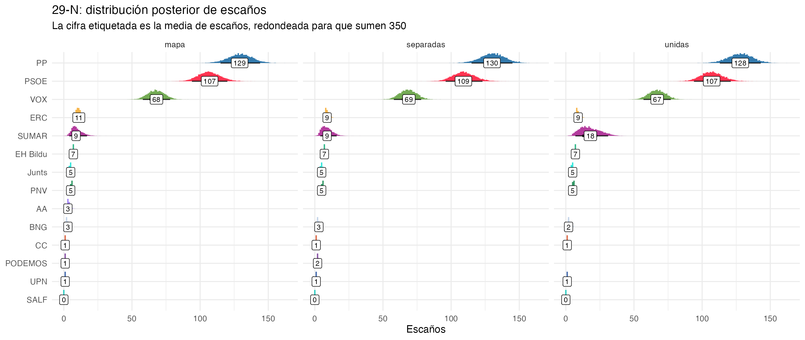
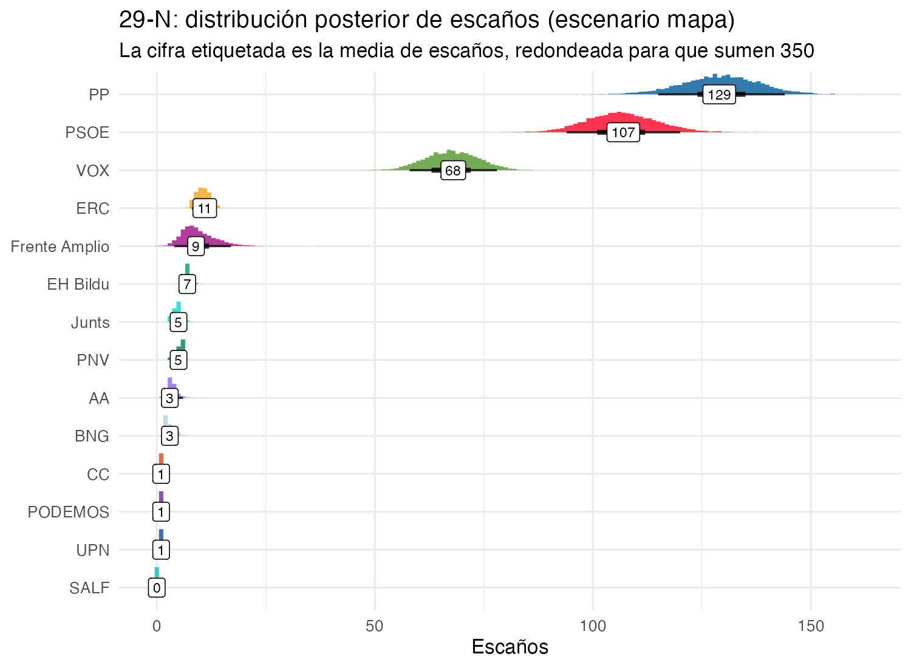
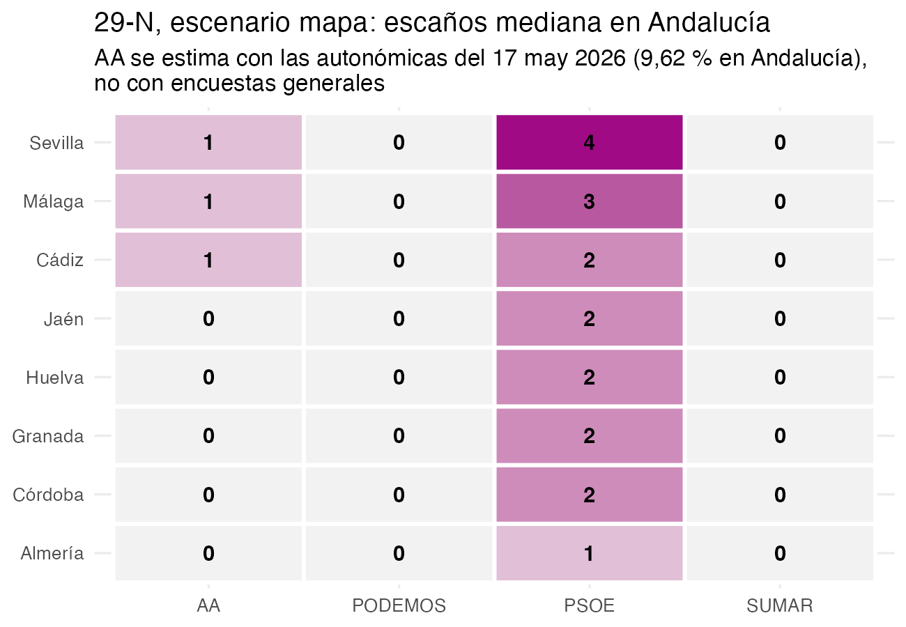
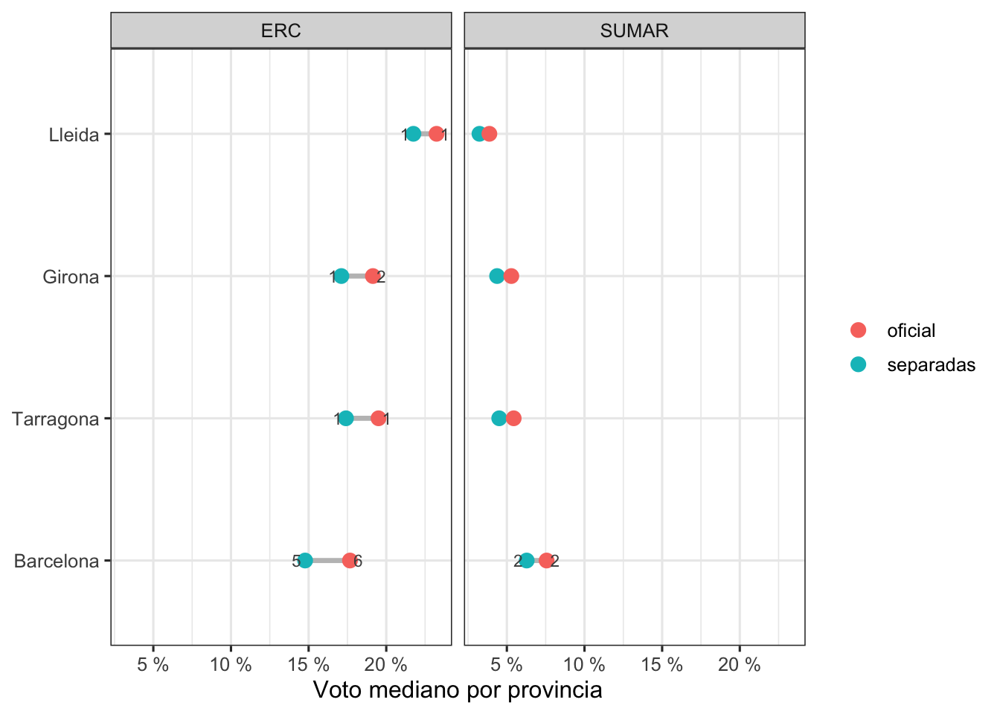

flowchart TD A[1. Encuestas<br/>scraping + preparar_meta] --> B["2. Modelo 1 (brms)<br/>multinomial 6/7 categorías<br/>time + (1|encuestadora)"] B --> C[3. Modelo 2<br/>composición del BLOQUE<br/>8 subceldas regionales] B --> D[4. Capa de error de encuestas<br/>calibrada 20D-23J] C --> D D --> E[5. Reparto provincial<br/>ratio 23J x shock jerárquico] E --> F[6. Reglas del mapa<br/>unida / sin_podemos / con_aa] F --> G["7. Umbral 3% + D'Hondt<br/>provincia a provincia"] G --> H[8. Resúmenes<br/>escaños, mayorías, provincias]
El frente amplio, Podemos y Adelante Andalucía: el mapa de la izquierda en el 29-N
2026
muestreo
encuestas electorales
análisis bayesiano
brms
El mapa de listas de la izquierda para el 29-N (frente amplio, Podemos por separado, ERC en Cataluña y Adelante Andalucía) llevado al simulador de escaños: cuánto cuesta la fragmentación y a quién beneficia.
NoteActualización del 25 de octubre de 2026
Los tres escenarios usan los modelos reajustados con la encuesta de IMOP para El Confidencial (campo del 13 al 16 de octubre), la única publicada desde el 11 de octubre. En el escenario mapa, la mediana de escaños pasa de 131 a 129 para el PP y de 67 a 68 para VOX. La probabilidad de que PP y VOX sumen 176 o más sigue en el 99 %. La tabla de sensibilidad a los priors es todavía la del ajuste del 17 de octubre.
Resumen
Tercera parte del meta-análisis de las generales del 29 de noviembre de 2026. En la primera agregué las encuestas y en la segunda traduje los porcentajes a escaños.
Pero el 16 de octubre tuvimos coaliciones. Sumar ha hecho frente amplio, pero Podemos solo entra en algunas provincias, en Cataluña hace campaña por ERC y en Andalucía Adelante Andalucía compite fuera. Metemos eso en el simulador de escaños y comparamos con los dos extremos teóricos: lista conjunta en las 52 provincias (unidas) y listas separadas en las mismas (separadas).
Con las coaliciones actuales, que llamaremos escenario (oficial) el Frente Amplio saca 9 escaños de mediana y Podemos 1. Si hubieran ido unidos en toda España serían 17; por separado en toda España, 8 y 2. La fragmentación le cuesta al Frente Amplio 8,2 escaños de media frente a la lista única. ERC gana con el mapa: pasa de 9 a 11 escaños. Y Adelante Andalucía saca 3, que me sorprendió: la explicación está en las asunciones que he hecho, y las cuento abajo.
De la encuesta al escaño
En este post, conté como hacía la proyección de voto a escaños, con todos los caveats que pueda haber a
- Las encuestas informan de los grandes y, de vez en cuando, de los regionales. Como el mapa necesita escaños para ERC, Junts, PNV y compañía, hay un modelo aparte para el BLOQUE.
- Lo que dicen las encuestas no es lo que saldrá el 29-N: hay una capa de error calibrada con lo que se equivocaron de verdad entre 20D y 23J.
- Y el Congreso se reparte provincia a provincia, no a nivel nacional: hay un paso intermedio de distribución provincial.
El flujo completo sería (todo en 2026/10/, script: escenarios_mapa_29N.R):
En dibujito
Encuestas (
preparar_meta.R, con actualización opcional de las encuestas del día). Tres datasets: el grande con 6 categorías (SUMAR = Sumar+Podemos, como la historia), el grande con 7 (SUMAR y PODEMOS separadas) y el del BLOQUE con sus subceldas. CIS y ElectoPanel fuera del modelo 1 (estimación y panel, respectivamente); el CIS quedará para un análisis aparte con microdatos. El modelo 1 usa 48 encuestas (la más reciente es del 16/10/2026) y el modelo 2,Modelo 1 (
ajustar_grande/ajustar_grande_sep): multinomialcell_counts | trials(n) ~ time + (1 | encuestadora), con origen2026-07-01y predicción al 29-N conre_formula = NA(tendencia sin efecto casa: el sesgo común del consenso lo lleva la capa de error, no un efecto aleatorio nuevo).Modelo 2 (
ajustar_bloque): multinomial condicional de 8 subceldas (Junts, ERC, PNV, EH Bildu, BNG, CC, UPN, RESTO) contrials =el n del BLOQUE de cada encuesta; solo casas que reportan los 7 regionales.Capa de error de encuestas: empírica, calibrada con la última semana de campaña de 20D-2015 a 23J-2023 (90 encuestas): sigma por partido (1,3-2,6 pp. sesgo del PSOE (+1,32 encogido a +0,66), correlación PP-VOX +0,5
Distribución provincial: cuota nacional de cada simulación (un draw de la posterior) × ratio provincial del 23J × shock jerárquico
exp(eta_ccaa + eps_prov), con taus del posterior brms para los grandes, RMS de los grandes para SALF (y ahora AA) y plug-in para los regionales; cada multiplicador se recentra con los votos de la referencia para no despegar el voto nacional.Reglas del mapa: las asunciones que hacemos tras la nueva configuración de las coaliciones electorales.
Umbral legal del 3% provincial y D’Hondt provincia a provincia; el RESTO agregado no compite (sus escaños “fantasma” se dan por perdidos).
Resúmenes: mediana e IC90 por partido y escenario, P(mayoría ≥ 176) y medianas de voto/escaños por provincia, en tres CSV.
NoteEl pipeline es reproducible con encuestas nuevas
Cada ejecución descarga las encuestas que hayan salido desde la anterior, reconstruye los tres datasets, reajusta los tres modelos y vuelve a simular todo: los resultados del post son una foto de la fecha de la última ejecución. --sin-actualizar salta la descarga (por ejemplo, para volver a simular sin encuestas nuevas).
El mapa de coaliciones, provincia a provincia
Lo que se ha registrado (CSV provisional del 16-17 oct): Sumar ha hecho frente amplio, pero Podemos solo entra en algunas provincias; en Cataluña Podemos no se presenta y hace campaña por ERC; en Andalucía, Adelante Andalucía no entra en el frente amplio. El mapa operativo queda así:
- Canarias y C. Valenciana: lista conjunta (Podemos dentro).
- Cataluña: Frente Amplio–Comuns por un lado; ERC + Podemos por otro (Podemos no compite con siglas propias).
- Andalucía: Frente Amplio por Andalucía sin Podemos ni Adelante Andalucía, que compite sola; Podemos se presenta aparte (candidatura sin nombre confirmado), y la canibalización de AA le deja un residuo mínimo.
- Resto: Podemos y el frente amplio por separado.
# A tibble: 4 × 4
regla comunidades provincias diputados
<chr> <chr> <int> <dbl>
1 Lista conjunta (Podemos dentro) C. Valenciana, Canarias 5 48
2 Podemos con ERC Cataluña 4 48
3 Con Adelante Andalucía Andalucía 8 60
4 Listas separadas Aragón, Asturias, Cantab… 35 194Cómo entra el mapa en el simulador
El simulador (simular_escanos.R) reparte, en cada simulación, el voto nacional del posterior provincia a provincia (ratio 23J + shock jerárquico) y aplica el umbral del 3% y D’Hondt con el reparto de escaños
regla por provincia, después del reparto y antes del umbral:
flowchart TD A[Posterior del meta-análisis<br/>voto nacional de cada simulación] --> B[Reparto provincial<br/>ratio 23J + shock jerárquico] --> C[Regla provincial<br/>unida / sin_podemos / con_aa / separadas] --> D[Umbral 3% + D'Hondt] --> E[Escaños por provincia y partido]
unida(Canarias, C. Valenciana): el voto de Podemos se suma a la lista conjunta, D’Hondt no ve composición interna.sin_podemos(Cataluña): Podemos no compite; su voto se reparte entre ERC y SUMAR y el resto va a abstención/otros.con_aa(Andalucía): entra AA, con su propio patrón provincial.separadas: nada cambia.
Adelante Andalucía. De residuo del modelo a partido con entidad propia
En el modelo 1 AA no existe: las encuestas que la cuentan la meten en el BLOQUE, y el modelo 2 la deja dentro de RESTO, el residual del residual. En el 23J eso era inofensivo (solo se presentó en Cádiz, 1,44%), pero en las autonómicas de mayo sacó 9,62 % y 8 escaños, por delante de Por Andalucía. Dejarla en un residual sin escaños infravaloraba a la izquierda andaluza.
AA entra ahora teniendo en cuenta que:
- Patrón provincial de las autonómicas del 17-may-2026 (
aa_autonomicas2026_provincias.csv). Es un multiplicador, no una distribución: share provincial = share andaluza de AA × (pct AA en la provincia / pct AA andaluz). El agregado ponderado por votos válidos reconstruye la cuota andaluza exactamente.
# A tibble: 8 × 6
codigo_provincia provincia votos_aa pct_aa escanos_aa votos_validos
<chr> <chr> <dbl> <dbl> <dbl> <dbl>
1 04 Almería 9306 0.0309 0 301165
2 11 Cádiz 85977 0.144 2 598726
3 14 Córdoba 35587 0.0835 1 426192
4 18 Granada 32586 0.0683 1 477101
5 21 Huelva 19631 0.0802 1 244776
6 23 Jaén 14808 0.0436 0 339633
7 29 Málaga 69881 0.0933 1 748992
8 41 Sevilla 133956 0.129 2 1038419De dónde sale su porcentaje: primero del RESTO de la provincia (su “familia” de partidos actual en el modelo, que no compite en D’Hondt) y después de PODEMOS, SUMAR y PSOE — las papeletas que canibaliza — con pesos sorteados (44/44/11 de media, ver la tabla de priors). Si a alguno de los tres no le queda voto que ceder, lo que falta sale del PSOE: pasa donde AA es grande y RESTO + SUMAR + Podemos es pequeño, como en Sevilla (AA 12,9 % en mayo). Es una asunción gorda, lo sé.
Umbral y D’Hondt normales: compite como cualquier otra lista.
La capa bayesiana de los supuestos nuevos
Todo lo demás en la simulación es Monte Carlo sobre posteriores; meter estos supuestos como constantes congelaba la incertidumbre y los IC90 infravaloraban el riesgo total. Ahora cada simulación sortea:
| Supuesto | Prior | Media | IC90 implícito |
|---|---|---|---|
| Cuota andaluza de AA | logit-normal, sd 0,2 en logit | 9,62 % (mediana) | 7,1 %-12,9 % |
| Patrón provincial de AA | shock provincial log-ratio con el tau provincial heredado de los grandes (como SALF) | patrón de mayo | — |
| Canibalización (Podemos/Sumar/PSOE) | Dirichlet(4, 4, 1) | 44/44/11 | — |
| Transferencia catalana (ERC/Sumar/fuera) | Dirichlet(10, 4,5, 0,75) | 65,6 / 29,5 / 4,9 | — |
El shock del patrón de AA solo mueve el reparto entre provincias
Los cuatro priors son elecciones explícitas, la mayoría a ojo; los nombro uno a uno.
- Cuota andaluza de AA (logit-normal, sd 0,2 en logit): la mediana es el 9,62 % de las autonómicas de mayo, la única medición real que hay de AA. La sd es una elección a ojo con margen generoso: el IC90 va del 7,1 % al 12,9 %, un rango que cubre desde un AA que en generales se queda en dos tercios del voto autonómico hasta uno que lo supera con holgura. Lo incierto es el traslado autonómicas → generales (lista distinta, campaña nacional, participación), y prefiero pasarme de incertidumbre a congelarla en una constante.
- Patrón provincial de AA: lleva el mismo shock jerárquico que SALF, la otra familia sin encuestas propias, con el tau provincial heredado de los grandes. El shock se recentra para que solo mueve el reparto entre provincias y no cambie el total de Andalucía.
- Canibalización (Dirichlet(4, 4, 1)): los pesos medios 44/44/11 reflejan de dónde salió el voto de AA en las autonómicas: compite en el mismo espacio que Podemos y Sumar, y solo toca al PSOE cuando la suma de los otros dos no llega para compensar lo que se estima que debe sacar AA. Con suma 9, la Dirichlet deja dispersión entre simulaciones: a veces AA come más de Podemos, a veces más de Sumar.
- Transferencia catalana (Dirichlet(10, 4,5, 0,75)): el reparto medio 65,6 / 29,5 / 4,9 es un criterio a ojo anclado en la campaña: Podemos pide explícitamente el voto para ERC, pero parte de su electorado tiene lista propia en el FA-Comuns.
NoteEl matiz del doble conteo
Si AA ya está parcialmente dentro del BLOQUE/RESTO que miden las encuestas, dibujarle encima una share andaluza de ~9,6 % implica asumir que las encuestas nacionales la infravaloran.
Resultados
oficial es el mapa de coaliciones registrado el 16-17 oct.
# A tibble: 7 × 4
partido unidas separadas oficial
<chr> <chr> <chr> <chr>
1 SUMAR 17 [7, 31] 8 [4, 16] 9 [4, 17]
2 PODEMOS — 2 [0, 4] 1 [0, 2]
3 AA — — 3 [2, 6]
4 ERC 9 [7, 11] 9 [7, 12] 11 [8, 13]
5 PSOE 107 [94, 121] 109 [96, 123] 106 [94, 120]
6 PP 128 [113, 143] 130 [115, 145] 129 [115, 144]
7 VOX 67 [57, 77] 68 [58, 78] 68 [58, 78] # A tibble: 9 × 3
escenario mayoria prob
<chr> <chr> <chr>
1 unidas PP solo >= 176 0,0 %
2 unidas PP + VOX >= 176 97,8 %
3 unidas investidura >= 176 1,4 %
4 separadas PP solo >= 176 0,0 %
5 separadas PP + VOX >= 176 99,3 %
6 separadas investidura >= 176 0,5 %
7 oficial PP solo >= 176 0,0 %
8 oficial PP + VOX >= 176 99,0 %
9 oficial investidura >= 176 0,7 % 



¿Cuánto cuesta las coaliciones acordadas?
Los tres escenarios comparten modelo, simulaciones y semilla; solo cambia la regla provincial. Por eso la diferencia simulación a simulación entre dos escenarios es el efecto de las coaliciones acordadas, sin ruido de simulación entre ellos.
El mismo voto rinde menos en dos listas que en una. Sumar y Podemos suman 9,0 % del voto nacional (mediana) tanto juntos (unidas) como por separado en toda España (separadas: 6,1 % + 2,8 %). Juntos sacan 17 escaños de mediana; por separado, 8 + 2. El mapa real queda en 9 + 1: para el Frente Amplio y Podemos se parece más a separadas que a unidas.
Ningún escaño se pierde: D’Hondt reparte siempre los 350. Al pasar de unidas al oficial, el FA pierde 8,2 escaños de media; AA, ERC y Podemos recogen 6,1 y PP y VOX, 2,2.
unidas y oficial, y cambio draw a draw (oficial − unidas).
# A tibble: 8 × 4
Partido unidas (escaños, med…¹ oficial (escaños, me…² `Cambio (escaños)`
<chr> <chr> <chr> <chr>
1 Frente Ampli… 17,8 9,6 −8,2
2 AA 0,0 3,5 +3,5
3 ERC 8,8 10,6 +1,8
4 Podemos 0,0 0,9 +0,9
5 PP 127,9 129,3 +1,4
6 VOX 66,9 67,7 +0,8
7 PSOE 107,1 106,7 −0,4
8 PNV, EH Bild… 21,4 21,8 +0,3
# ℹ abbreviated names: ¹`unidas (escaños, media)`, ²`oficial (escaños, media)`Método: escenarios_29N_transicion.csv; cambio = media sobre los 6.000 simulaciones de (escaños en oficial − escaños en unidas). Los cambios suman 0.
Para los grandes, el efecto es pequeño frente a la incertidumbre del posterior. La probabilidad de la mayoría de PP + VOX se mueve entre el 97,8 % y el 99,3 %.
# A tibble: 7 × 4
Indicador unidas oficial separadas
<chr> <chr> <chr> <chr>
1 PP (escaños, mediana) 128 129 130
2 VOX (escaños, mediana) 67 68 68
3 PSOE (escaños, mediana) 107 106 109
4 PP + VOX (escaños, mediana) 195 197 199
5 Investidura (escaños, mediana) 154 152 150
6 P(PP + VOX ≥ 176) 97,8 % 99,0 % 99,3 %
7 P(investidura ≥ 176) 1,4 % 0,7 % 0,5 % “Investidura” es el bloque de los grupos que apoyaron a Sánchez en 2023, más Podemos y AA: PSOE, Frente Amplio, Podemos, AA, ERC, Junts, EH Bildu, PNV, BNG y CC. Método: escenarios_29N_bloques.csv; mediana y P(≥ 176) de la suma de escaños por simulación.
El bloque de investidura saca 154 escaños de mediana en unidas, 152 en el oficial y 150 en separadas. El mapa queda a medio camino gracias a la transferencia catalana y a AA, que convierte en escaños voto que antes no competía. El mapa no decide la elección entre bloques: decide cuántos escaños pierde la izquierda compitiendo consigo misma.
AA en Andalucía
Con el escenario oficial, AA saca 3 escaños de mediana (3,5 de media), con un escaño mediano en Cádiz, Málaga, Sevilla (Figure 6). Su voto mediano en esas provincias es del 14,2 %, 12,7 % y 9,2 %.
AA vacía primero el RESTO (del 2,0 % al 4,9 % provincial en separadas a 0 en 7 de las ocho provincias) y después come de Podemos y Sumar. Podemos se queda con voto mediano 0 en 5 de las ocho provincias. En Sevilla, el FA pasa del 7,4 % en separadas al 3,1 % en oficial, y Podemos del 2,8 % a 0,0 %. El Frente Amplio andaluz queda a 0 escaños en las ocho provincias (2 en unidas).
El coste para el PSOE es contenido: −0,3 puntos de voto nacional frente a unidas (27,1 % → 26,7 %, mediana). En escaños andaluces, la suma de medianas provinciales del PSOE es 18 en unidas, 18 en oficial y 19 en separadas. Parte de los escaños de AA sale de voto que antes no competía en D’Hondt.
La transferencia catalana
ERC pasa de 9 a 11 escaños de mediana con oficial (+1,8 de media, simulación a simulación). Recoge de media el 65,6 % del voto catalán de Podemos; el 29,5 % va al Frente Amplio y el 4,9 % sale del voto válido (abstención u otros). El reparto se sortea en cada simulación con la Dirichlet.
En Cataluña, lo que gana ERC lo pierde el FA: ERC pasa de 8 a 10 escaños y el FA de 4 a 2 (suma de medianas provinciales, unidas frente a oficial). Es la pieza del mapa que no tiene coste de fragmentación para la izquierda: el voto no se parte, cambia de lista.

separadas y oficial, con el escaño mediano junto a cada punto.
Sensibilidad
Los priors nuevos son parámetros de simular(), así que la sensibilidad no exige reajustar modelos: vuelvo a ejecutar el escenario oficial con la misma semilla y el mismo posterior, cambiando un prior cada vez. Dos variantes: una share andaluza de AA más floja (aa_pct_and = 0,06) y una canibalización repartida a partes iguales (aa_caniba_alpha = (3, 3, 3)), con la que AA también come del PSOE.
# A tibble: 7 × 4
partido Base `AA al 6 %` `AA come también del PSOE`
<chr> <chr> <chr> <chr>
1 AA 3 [2, 5] 1 [0, 3] 4 [2, 6]
2 SUMAR 9 [4, 16] 9 [4, 17] 10 [4, 18]
3 PODEMOS 1 [0, 2] 1 [0, 2] 1 [0, 2]
4 PSOE 106 [93, 120] 107 [94, 121] 103 [90, 117]
5 PP 131 [116, 145] 131 [116, 146] 132 [117, 147]
6 VOX 67 [57, 77] 67 [57, 77] 68 [57, 78]
7 ERC 11 [8, 13] 11 [8, 13] 11 [8, 13] Dos conclusiones. La share andaluza de AA mueve sobre todo a AA: con el prior flojo, AA baja de 3 a 1 escaño de mediana, y el resto de la tabla apenas cambia (SUMAR 9, PODEMOS 1, ERC 11; PP 131 y VOX 67 igual que en la base, PSOE 107 frente a 106). La pieza delicada es la canibalización: si AA come del PSOE al mismo nivel que de Podemos y Sumar, el PSOE pierde unos 3 escaños de mediana (106 → 103), VOX y PP ganan 1 y 1 escaños respectivamente, P(PP + VOX ≥ 176) sube del 99,0 % al 99,4 % y P(investidura ≥ 176) baja del 0,6 % al 0,4 %. El prior Dirichlet(4, 4, 1), anclado en las autonómicas, es el que menos daño hace a la izquierda por construcción: el escenario que de verdad duele es el que no puedo descartar.
Limitaciones
- AA no tiene posterior propio: su incertidumbre es el prior, no datos de encuestas generales.
- El patrón provincial de AA es el de unas autonómicas; el traslado a generales puede no ser uniforme.
- La capa de error de encuestas sigue calibrada con SUMAR agregado (historia); el split Podemos/Sumar hereda su incertidumbre del posterior del modelo separado.
- La sensibilidad acota el daño: los priors de AA no cambian el ganador (P(PP + VOX ≥ 176) entre 99,0 % y 99,4 %), pero sí el reparto interno de la izquierda: con canibalización a partes iguales el PSOE pierde 3 escaños que el prior de las autonómicas le ahorra.
Detalles técnicos
- 6.000 simulaciones por escenario; seed 2911 en las simulaciones, 7314 en los fits. Reajuste de los tres modelos en cada ejecución.
- Los tres escenarios usan el modelo 1 de 7 categorías (SUMAR y PODEMOS separadas) y la misma semilla; solo cambia la regla provincial (
unidaen las 52,separadasen las 52 o la registrada). Las simulaciones están emparejadas: la simulación k es el mismo resultado de las encuestas en los tres escenarios. - Código:
simular_escanos.R,preparar_meta.R(encuestas y datos de entrada) yescenarios_mapa_29N.R. Los priors y las sigmas del texto se leen desimular_escanos.Rconformals(), no se copian. - Datos: los CSV de salida y los dos insumos del mapa y de AA están en la release
frente-amplio-29n:escenarios_29N_escanos.csv,escenarios_29N_mayorias.csv,escenarios_29N_bloques.csv,escenarios_29N_transicion.csv,escenarios_29N_provincias.csv,escenarios_29N_voto.csv,sensibilidad_29N_escanos.csv,sensibilidad_29N_mayorias.csv,coaliciones_izquierda_29N_provincias.csvyaa_autonomicas2026_provincias.csv. La sensibilidad usa la misma semilla y posterior que la base, cambiando un prior cada vez.